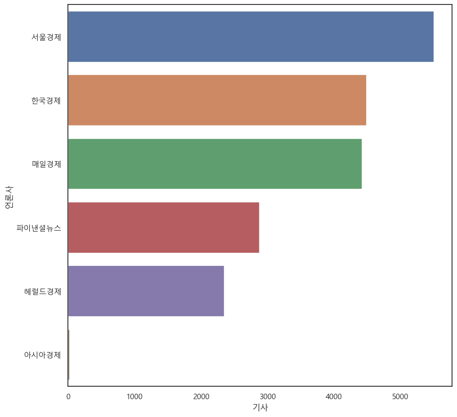
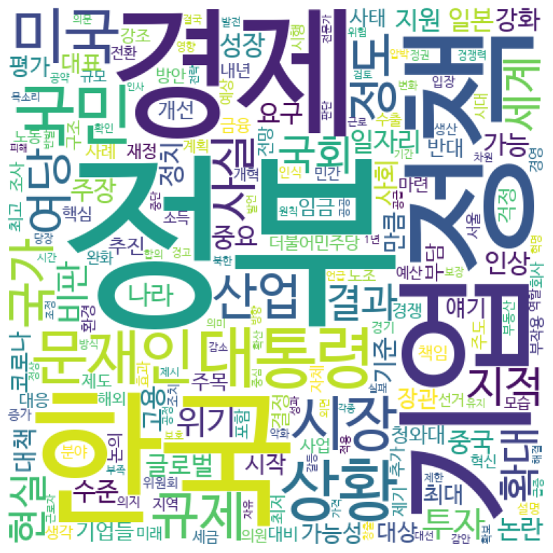
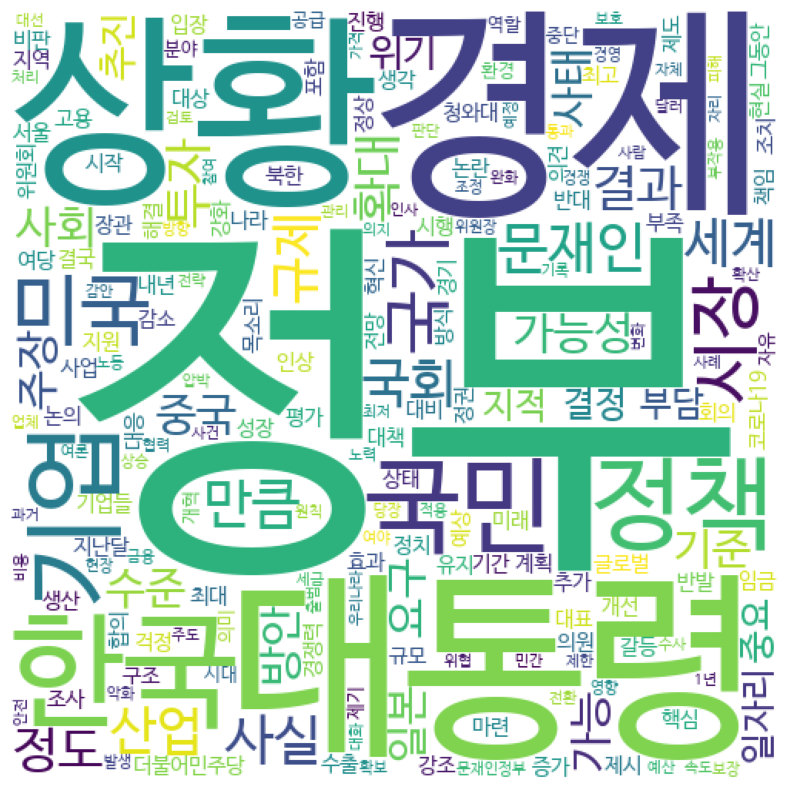
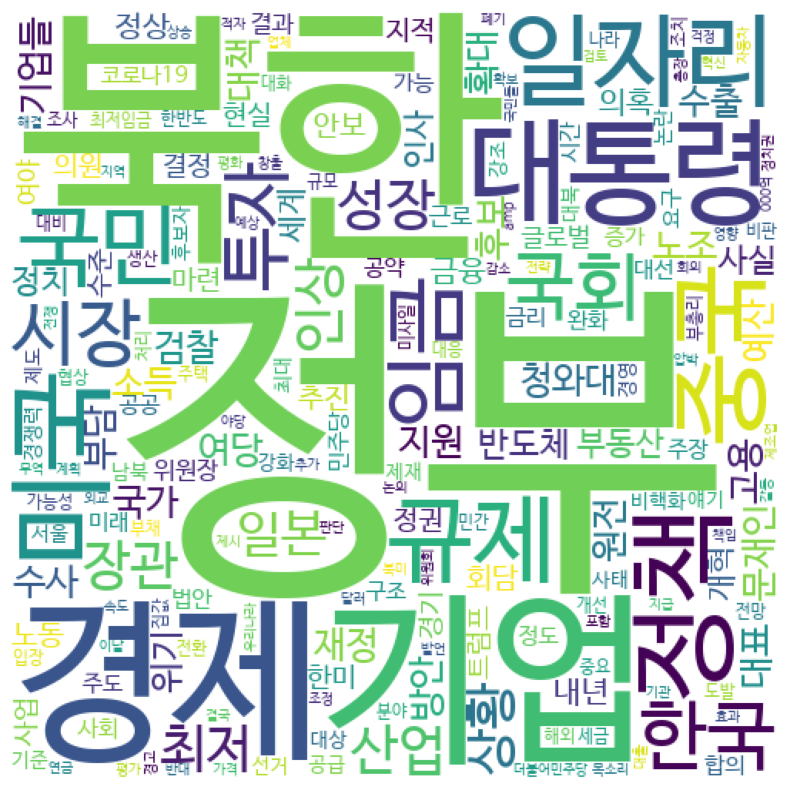
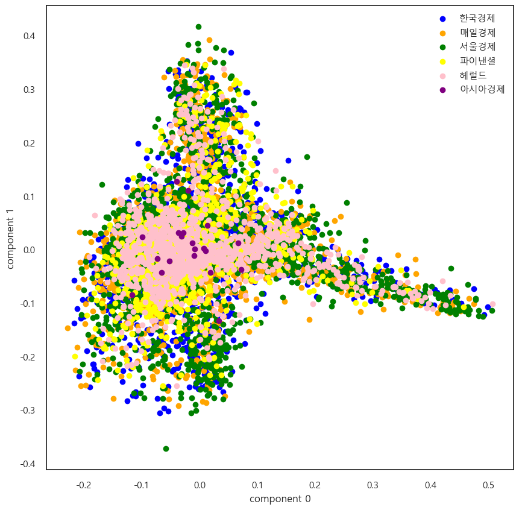
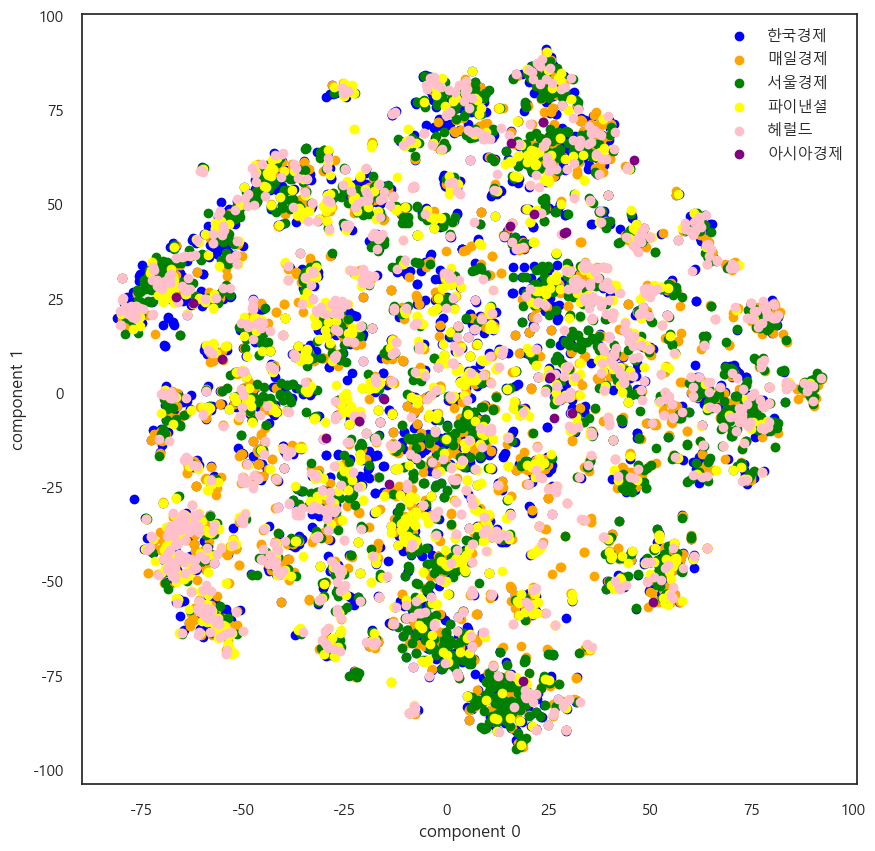
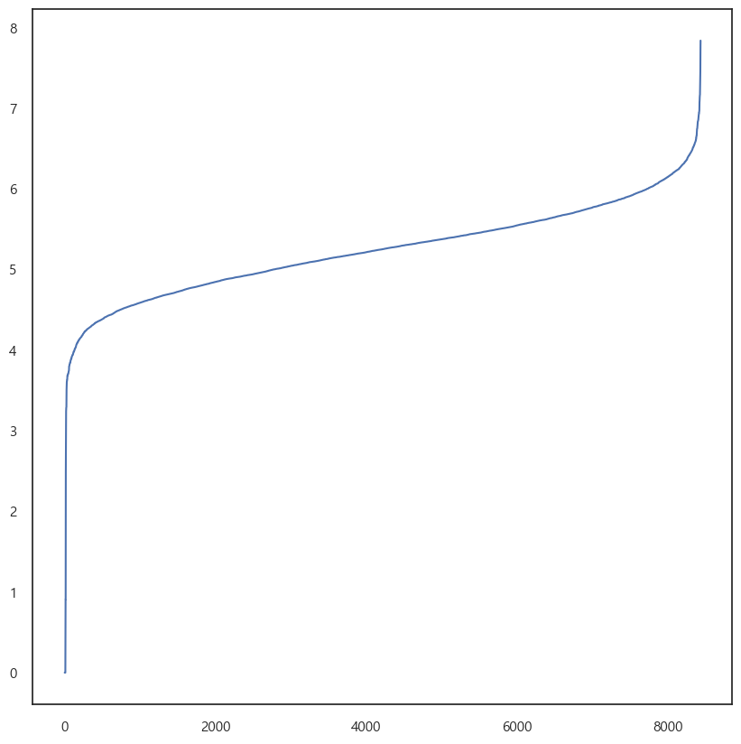
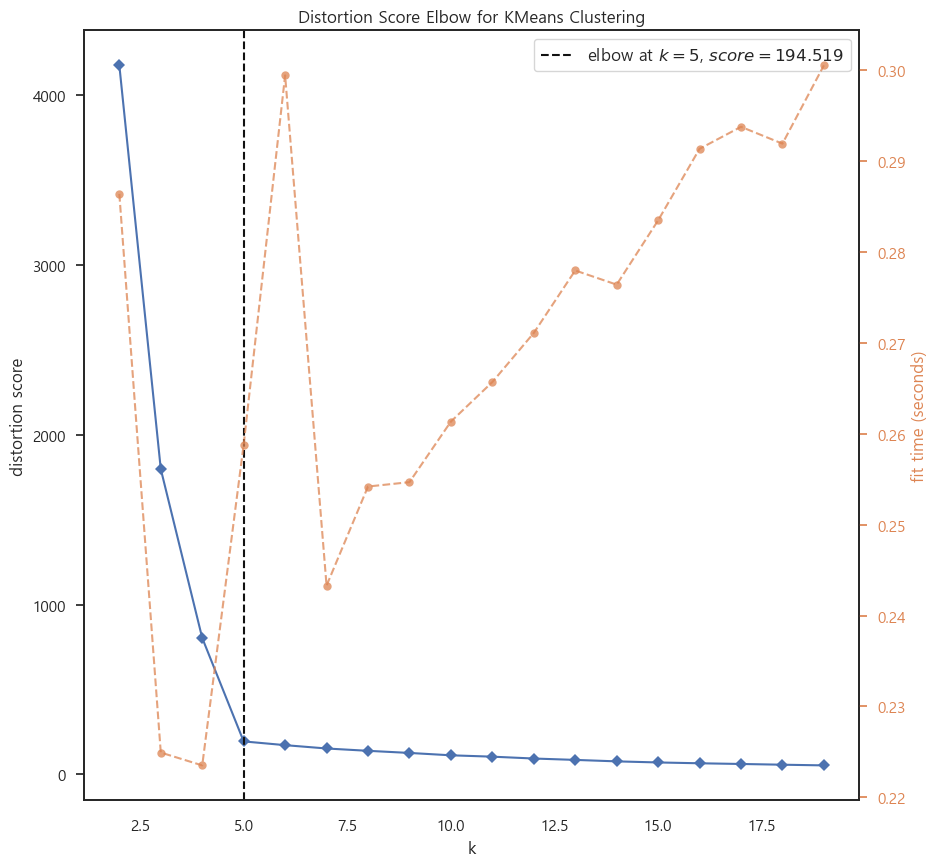
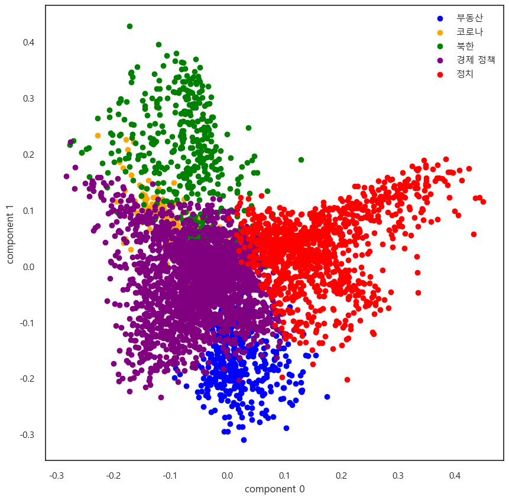
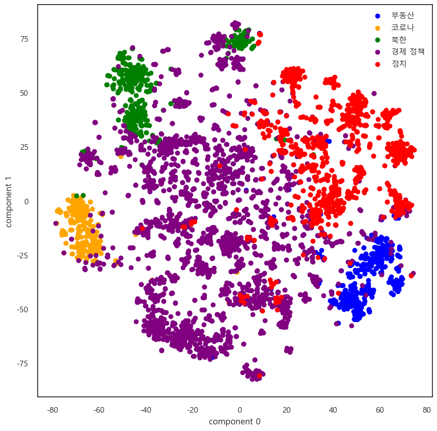

import BigKindsParser as bkp
import numpy as np
import pandas as pd
import matplotlib.pyplot as plt
import seaborn as sns
from wordcloud import WordCloud
import warnings
warnings.filterwarnings("ignore")언론사 빈도 확인
plt.rcParams["font.family"] = "Malgun Gothic"
plt.rcParams['figure.figsize'] = 10,10
sns.set(font="Malgun Gothic", rc={"axes.unicode_minus":False}, style='white')df = pd.read_excel('./econo_columns_20170510-20220509.xlsx', engine = "openpyxl")df_key = bkp.press_counter(df)sns.barplot(data = df_key, x = '기사', y = '언론사')
plt.figure(facecolor = 'white')
plt.show()
<Figure size 1000x1000 with 0 Axes>이상치 확인
outlier = df[df['언론사'] == '아시아경제'] ##아시아 경제 기사 추가 크롤링 필요outlier['일자'] #아시아경제 기사는 2021년부터 빅카인즈에 기사를 업로드 --> 2017~2020년 기사는 별도 크롤링 필요238 20220415
387 20220331
398 20220330
639 20220307
898 20220209
1400 20211217
2334 20210910
2711 20210804
2789 20210727
2895 20210716
3094 20210625
3231 20210611
3371 20210528
3501 20210514
3639 20210430
3663 20210428
3733 20210421
3820 20210413
4376 20210215
4544 20210127
Name: 일자, dtype: int64키워드 빈도
df_keywords = df['키워드']keywords = bkp.keywords_list(df_keywords)news_key = bkp.keyword_parser(keywords)
news_key = bkp.duplication_remover(news_key)
key = bkp.word_counter(news_key)news_key = bkp.counter_to_DataFrame(key)wc = WordCloud(font_path = './NanumBarunGothic.ttf',
width = 500,
height = 500,
background_color='white').generate_from_frequencies(news_key.set_index('단어').to_dict()["빈도"])
plt.figure(figsize = (10, 10))
plt.imshow(wc)
plt.axis('off')
plt.show()언론사별 키워드 분석 –> 한경
bkp.press_keywords_wordcloud(df, '한국경제')
언론사별 키워드 분석 –> 매경
bkp.press_keywords_wordcloud(df, '매일경제')
언론사별 키워드 분석 –> 서경
bkp.press_keywords_wordcloud(df, '서울경제')언론사별 키워드 분석 –> 파이낸셜
bkp.press_keywords_wordcloud(df, '파이낸셜뉴스')언론사별 키워드 분석 –> 헤럴드
bkp.press_keywords_wordcloud(df, '헤럴드경제')TF-IDF 분석
언론사별 용어 빈도는 비슷 –> tf-idf를 통한 특징 추출 필요
from sklearn.feature_extraction.text import TfidfVectorizer #module import한경
han_words = df[df['언론사'] == '한국경제']han_words = han_words['키워드']tfidf = TfidfVectorizer()
tdm = tfidf.fit_transform(han_words)word_count1 = pd.DataFrame({
'단어': tfidf.get_feature_names(),
'빈도': tdm.sum(axis=0).flat
}).sort_values('빈도', ascending = False).reset_index(drop = True)wc = WordCloud(font_path = './NanumBarunGothic.ttf',
width = 500,
height = 500,
background_color='white').generate_from_frequencies(word_count1.set_index('단어').to_dict()["빈도"])
plt.figure(figsize = (10, 10))
plt.imshow(wc)
plt.axis('off')
plt.show()매경
mail_words = df[df['언론사'] == '매일경제']mail_words = mail_words['키워드']tfidf = TfidfVectorizer()
tdm = tfidf.fit_transform(mail_words)word_count2 = pd.DataFrame({
'단어': tfidf.get_feature_names(),
'빈도': tdm.sum(axis=0).flat
}).sort_values('빈도', ascending = False).reset_index(drop = True)wc = WordCloud(font_path = './NanumBarunGothic.ttf',
width = 500,
height = 500,
background_color='white').generate_from_frequencies(word_count2.set_index('단어').to_dict()["빈도"])
plt.figure(figsize = (10, 10))
plt.imshow(wc)
plt.axis('off')
plt.show()서경
seo_words = df[df['언론사'] == '서울경제']seo_words = seo_words['키워드']tfidf = TfidfVectorizer()
tdm = tfidf.fit_transform(seo_words)word_count3 = pd.DataFrame({
'단어': tfidf.get_feature_names(),
'빈도': tdm.sum(axis=0).flat
}).sort_values('빈도', ascending = False).reset_index(drop = True)wc = WordCloud(font_path = './NanumBarunGothic.ttf',
width = 500,
height = 500,
background_color='white').generate_from_frequencies(word_count3.set_index('단어').to_dict()["빈도"])
plt.figure(figsize = (10, 10))
plt.imshow(wc)
plt.axis('off')
plt.show()
파이낸셜
fin_words = df[df['언론사'] == '파이낸셜뉴스']fin_words = fin_words['키워드']tfidf = TfidfVectorizer()
tdm = tfidf.fit_transform(fin_words)word_count4 = pd.DataFrame({
'단어': tfidf.get_feature_names(),
'빈도': tdm.sum(axis=0).flat
}).sort_values('빈도', ascending = False).reset_index(drop = True)wc = WordCloud(font_path = './NanumBarunGothic.ttf',
width = 500,
height = 500,
background_color='white').generate_from_frequencies(word_count4.set_index('단어').to_dict()["빈도"])
plt.figure(figsize = (10, 10))
plt.imshow(wc)
plt.axis('off')
plt.show()헤럴드
hero_words = df[df['언론사'] == '헤럴드경제']hero_words = hero_words['키워드']tfidf = TfidfVectorizer()
tdm = tfidf.fit_transform(hero_words)word_count5 = pd.DataFrame({
'단어': tfidf.get_feature_names(),
'빈도': tdm.sum(axis=0).flat
}).sort_values('빈도', ascending = False).reset_index(drop = True)wc = WordCloud(font_path = './NanumBarunGothic.ttf',
width = 500,
height = 500,
background_color='white').generate_from_frequencies(word_count5.set_index('단어').to_dict()["빈도"])
plt.figure(figsize = (10, 10))
plt.imshow(wc)
plt.axis('off')
plt.show()
words_df1 = pd.concat([word_count1, word_count2], join='outer', axis=1)words_df1.columns = ['단어(한경)', '빈도(한경)', '단어(매경)', '빈도(매경)']words_df2 = pd.concat([word_count3, word_count4, word_count5], join='outer', axis=1)words_df2.columns = ['단어(서경)', '빈도(서경)','단어(파이낸셜)', '빈도(파이낸셜)','단어(헤럴드)', '빈도(헤럴드)']words_df = pd.concat([words_df1, words_df2], join = 'outer', axis = 1)words_df.head(20)| 단어(한경) | 빈도(한경) | 단어(매경) | 빈도(매경) | 단어(서경) | 빈도(서경) | 단어(파이낸셜) | 빈도(파이낸셜) | 단어(헤럴드) | 빈도(헤럴드) | |
|---|---|---|---|---|---|---|---|---|---|---|
| 0 | 정부 | 170.874039 | 정부 | 127.335164 | 정부 | 207.973736 | 정부 | 96.774121 | 정부 | 68.249231 |
| 1 | 기업 | 143.353837 | 기업 | 110.468213 | 북한 | 153.504708 | 대통령 | 78.668422 | 대통령 | 55.984063 |
| 2 | 경제 | 109.593958 | 대통령 | 105.349634 | 기업 | 147.576313 | 기업 | 73.745679 | 경제 | 47.226472 |
| 3 | 규제 | 99.747167 | 경제 | 98.987800 | 경제 | 141.483724 | 경제 | 66.228374 | 국민 | 43.421289 |
| 4 | 한국 | 96.602629 | 북한 | 94.959321 | 대통령 | 136.803875 | 미국 | 60.756488 | 기업 | 43.096729 |
| 5 | 정책 | 95.039328 | 미국 | 93.682823 | 정책 | 125.951686 | 일자리 | 58.554333 | 정책 | 41.426563 |
| 6 | 미국 | 90.302124 | 중국 | 87.481722 | 미국 | 125.941853 | 한국 | 57.845017 | 검찰 | 36.136012 |
| 7 | 대통령 | 89.964928 | 한국 | 86.394644 | 일자리 | 108.601917 | 정책 | 53.730281 | 상황 | 35.747487 |
| 8 | 북한 | 86.210303 | 정책 | 76.064262 | 중국 | 104.657793 | 시장 | 51.787001 | 미국 | 34.320186 |
| 9 | 중국 | 83.305281 | 국민 | 73.182543 | 규제 | 100.005150 | 규제 | 45.949896 | 국회 | 33.419709 |
| 10 | 국민 | 79.407091 | 규제 | 68.673798 | 국민 | 97.847511 | 국회 | 43.571681 | 북한 | 32.206295 |
| 11 | 일자리 | 79.164376 | 국회 | 64.407326 | 임금 | 88.199132 | 중국 | 42.673492 | 장관 | 32.127931 |
| 12 | 시장 | 68.216227 | 시장 | 63.713174 | 한국 | 84.390802 | 일본 | 40.091627 | 한국 | 31.377541 |
| 13 | 노조 | 67.212984 | 투자 | 61.656313 | 국회 | 83.832130 | 성장 | 39.962075 | 일자리 | 30.921592 |
| 14 | 여당 | 64.899902 | 일자리 | 60.358299 | 투자 | 81.507045 | 임금 | 39.627805 | 성장 | 30.897654 |
| 15 | 투자 | 64.160446 | 임금 | 59.657628 | 시장 | 80.210144 | 북한 | 39.523417 | 임금 | 30.480363 |
| 16 | 임금 | 62.896762 | 일본 | 58.333997 | 성장 | 79.884542 | 국민 | 38.434493 | 대표 | 29.536249 |
| 17 | 산업 | 60.127337 | 성장 | 52.338215 | 장관 | 74.306424 | 부동산 | 35.483854 | 인상 | 28.477505 |
| 18 | 일본 | 58.510270 | 산업 | 52.099878 | 산업 | 73.267545 | 후보 | 34.080738 | 정도 | 28.369887 |
| 19 | 국회 | 58.063480 | 장관 | 51.585880 | 인상 | 73.013147 | 반도체 | 33.821207 | 정치 | 27.913461 |
Dimension Reduction
def targeting(x):
if x == '한국경제':
return 0
elif x == '매일경제':
return 1
elif x == '서울경제':
return 2
elif x == '파이낸셜뉴스':
return 3
elif x == '헤럴드경제':
return 4
elif x == '아시아경제':
return 5
df['target'] = df['언론사'].apply(lambda x : targeting(x))df20 = df[df['일자'] >= 20200100]
df10 = df[df['일자'] < 20200100]text20 = df20['키워드']
text20_df = df20[['언론사', '제목']]from sklearn.feature_extraction.text import CountVectorizer, TfidfTransformer
from sklearn.decomposition import PCA
from sklearn.pipeline import Pipeline
pipeline = Pipeline([
('vect', CountVectorizer()),
('tfidf', TfidfTransformer()),
])
vec = pipeline.fit_transform(text20).toarray()
pca_df = PCA(n_components=2).fit_transform(vec)
pca_df = pd.DataFrame(pca_df, columns = ['component 0', 'component 1'])pca_df['target'] = df['target']
# target 별 분리
pca_0 = pca_df[pca_df['target'] == 0]
pca_1 = pca_df[pca_df['target'] == 1]
pca_2 = pca_df[pca_df['target'] == 2]
pca_3 = pca_df[pca_df['target'] == 3]
pca_4 = pca_df[pca_df['target'] == 4]
pca_5 = pca_df[pca_df['target'] == 5]
# target 별 시각화
plt.scatter(pca_0['component 0'], pca_0['component 1'], color = 'blue', label = '한국경제')
plt.scatter(pca_1['component 0'], pca_1['component 1'], color = 'orange', label = '매일경제')
plt.scatter(pca_2['component 0'], pca_2['component 1'], color = 'green', label = '서울경제')
plt.scatter(pca_3['component 0'], pca_3['component 1'], color = 'yellow', label = '파이낸셜')
plt.scatter(pca_4['component 0'], pca_4['component 1'], color = 'pink', label = '헤럴드')
plt.scatter(pca_5['component 0'], pca_5['component 1'], color = 'purple', label = '아시아경제')
plt.xlabel('component 0')
plt.ylabel('component 1')
plt.legend()
plt.show()
from sklearn.manifold import TSNE
tsne = TSNE(n_components=2, learning_rate=400).fit_transform(vec)
tsne_df = pd.DataFrame(tsne, columns = ['component 0', 'component 1'])# class target 정보 불러오기
tsne_df['target'] = df['target']
# target 별 분리
tsne_0 = tsne_df[tsne_df['target'] == 0]
tsne_1 = tsne_df[tsne_df['target'] == 1]
tsne_2 = tsne_df[tsne_df['target'] == 2]
tsne_3 = tsne_df[tsne_df['target'] == 3]
tsne_4 = tsne_df[tsne_df['target'] == 4]
tsne_5 = tsne_df[tsne_df['target'] == 5]
# target 별 시각화
plt.scatter(tsne_0['component 0'], tsne_0['component 1'], color = 'blue', label = '한국경제')
plt.scatter(tsne_1['component 0'], tsne_1['component 1'], color = 'orange', label = '매일경제')
plt.scatter(tsne_2['component 0'], tsne_2['component 1'], color = 'green', label = '서울경제')
plt.scatter(tsne_3['component 0'], tsne_3['component 1'], color = 'yellow', label = '파이낸셜')
plt.scatter(tsne_4['component 0'], tsne_4['component 1'], color = 'pink', label = '헤럴드')
plt.scatter(tsne_5['component 0'], tsne_5['component 1'], color = 'purple', label = '아시아경제')
plt.xlabel('component 0')
plt.ylabel('component 1')
plt.legend()
plt.show()
t-SNE 결과, 문서 간의 일종의 군집이 존재하는 것으로 추정
문서 군집화를 시도해보면 좋으리라 생각
DBSCAN
from sklearn.preprocessing import Normalizer
nor = Normalizer()
vec_nor = nor.fit_transform(vec)from sklearn.preprocessing import MinMaxScaler
mms = MinMaxScaler()
mms_nor = mms.fit_transform(vec_nor)from sklearn.neighbors import NearestNeighbors
neigh = NearestNeighbors(n_neighbors=5)
nbrs = neigh.fit(mms_nor)
distances, indices = nbrs.kneighbors(mms_nor)
distances = np.sort(distances, axis=0)
distances = distances[:,1]
plt.plot(distances)
from sklearn.cluster import DBSCAN
dbs = DBSCAN(eps= 7, min_samples= 4, metric = "cosine")
cluster = dbs.fit_predict(mms_nor)
text20_df['군집'] = cluster
print('군집개수 :', cluster.max())군집개수 : 0text20_df.groupby('군집').size()군집
0 8433
dtype: int64군집이 형성되지 X
DBSCAN은 해당 요소에 사용할 만한 모델 X
K-Means
from sklearn.cluster import KMeans
from yellowbrick.cluster import KElbowVisualizer
vzr = KElbowVisualizer(KMeans(), k=(2, 20))
vzr.fit(pca_df)
vzr.poof()
<AxesSubplot: title={'center': 'Distortion Score Elbow for KMeans Clustering'}, xlabel='k', ylabel='distortion score'>from yellowbrick.cluster import SilhouetteVisualizer
kmeans= KMeans(n_clusters=5, max_iter=1000, random_state=0) #최적 Topic 개수 5개를 기점으로 진행
visualizer = SilhouetteVisualizer(kmeans, colors='yellowbrick')visualizer.fit(vec_nor)
visualizer.show()MemoryError: Unable to allocate 3.71 GiB for an array with shape (8433, 59099) and data type float64생각보다 실루엣 계수가 많이 낮음
K-means의 한계인 것인지, 아니면 정말 군집화가 잘 안된 것인지 추후 확인 필요
kmeans.fit(vec_nor)
labels = kmeans.labels_
text_df['군집'] = labelstext_df.groupby('군집').size()군집
0 421
1 265
2 430
3 2627
4 1066
dtype: int64# text_df[text_df['군집'] == 0].tail(20)
# text_df[text_df['군집'] == 1].tail(20)
# text_df[text_df['군집'] == 2].tail(20)
# text_df[text_df['군집'] == 3].tail(20)
# text_df[text_df['군집'] == 4].tail(20)0번 토픽 = 부동산 관련 칼럼
1번 토픽 = 코로나 관련 칼럼
2번 토픽 = 북한 관련 칼럼
3번 토픽 = 경제 정책 관련 칼럼
4번 토픽 = 정치 이슈 관련 칼럼
pca_df['cluster'] = labels
pca_clu_0 = pca_df[pca_df['cluster'] == 0]
pca_clu_1 = pca_df[pca_df['cluster'] == 1]
pca_clu_2 = pca_df[pca_df['cluster'] == 2]
pca_clu_3 = pca_df[pca_df['cluster'] == 3]
pca_clu_4 = pca_df[pca_df['cluster'] == 4]
plt.scatter(pca_clu_0['component 0'], pca_clu_0['component 1'], color = 'blue', label = '부동산')
plt.scatter(pca_clu_1['component 0'], pca_clu_1['component 1'], color = 'orange', label = '코로나')
plt.scatter(pca_clu_2['component 0'], pca_clu_2['component 1'], color = 'green', label = '북한')
plt.scatter(pca_clu_3['component 0'], pca_clu_3['component 1'], color = 'purple', label = '경제 정책')
plt.scatter(pca_clu_4['component 0'], pca_clu_4['component 1'], color = 'red', label = '정치')
plt.xlabel('component 0')
plt.ylabel('component 1')
plt.legend()
plt.show()
tsne_df['cluster'] = labels
tsne_clu0 = tsne_df[tsne_df['cluster'] == 0]
tsne_clu1 = tsne_df[tsne_df['cluster'] == 1]
tsne_clu2 = tsne_df[tsne_df['cluster'] == 2]
tsne_clu3 = tsne_df[tsne_df['cluster'] == 3]
tsne_clu4 = tsne_df[tsne_df['cluster'] == 4]
# target 별 시각화
plt.scatter(tsne_clu0['component 0'], tsne_clu0['component 1'], color = 'blue', label = '부동산')
plt.scatter(tsne_clu1['component 0'], tsne_clu1['component 1'], color = 'orange', label = '코로나')
plt.scatter(tsne_clu2['component 0'], tsne_clu2['component 1'], color = 'green', label = '북한')
plt.scatter(tsne_clu3['component 0'], tsne_clu3['component 1'], color = 'purple', label = '경제 정책')
plt.scatter(tsne_clu4['component 0'], tsne_clu4['component 1'], color = 'red', label = '정치')
plt.xlabel('component 0')
plt.ylabel('component 1')
plt.legend()
plt.show()